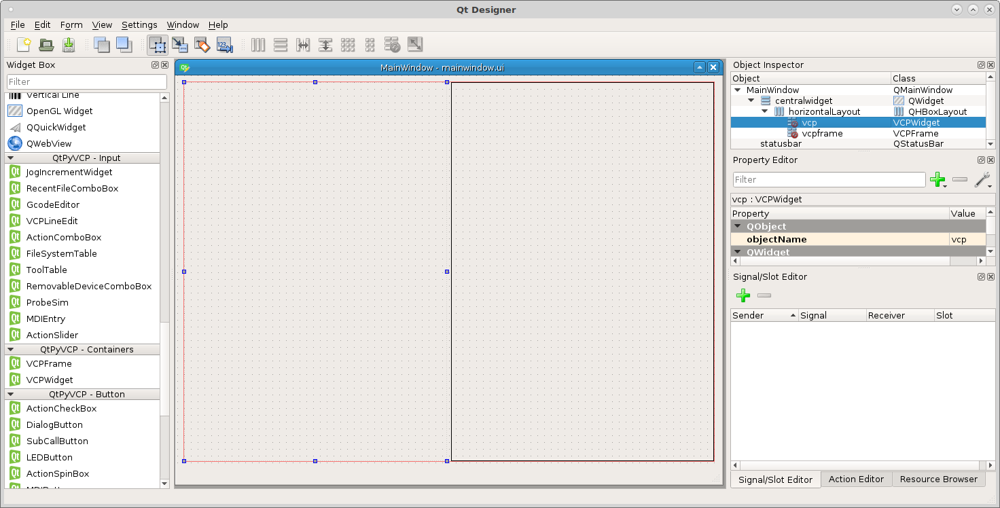
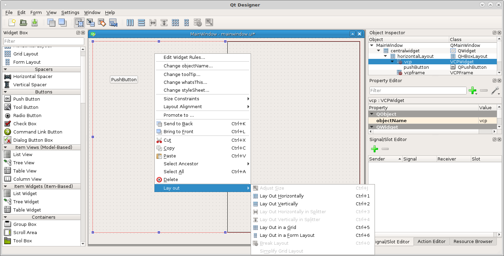
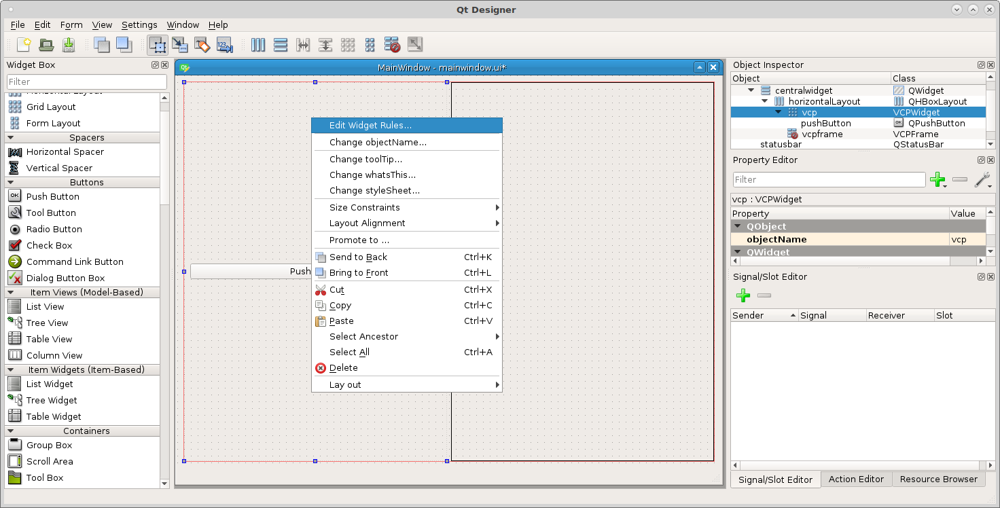

Containers¶
QtPyVCP containers allow you to set rules for the objects inside of the container. For example if you had a tool in spindle offset tab you could put a container in the tab and set the rule to only enable it if a tool is loaded in the spindle.
VCP Widget¶
The VCP Widget is a transparent container. You can specify the layout in a container by dropping another widget into the container then right click in the VCP Widget in an empty spot and select the layout you want.
VCP Frame¶
The VCP Frame container usually has a frame around it. This can be useful to help you focus on a section and to differentiate controls from each other.
Usage¶
In the following figure there are two QtPyVCP containers, on the right is a VCPFrame and on the left a VCPWidget.
{kind=link}
In order to add a layout to a container you first have to put something in the container. Any widget will work, after you drop the widget in the container right click in the container but not on the widget and select Layout, then pick the layout you want.
{kind=link}
To set a rule for the container double click on the container or right click on the container and select Edit Widget Rules.
{kind=link}
Rules that are available for containers are:
- Enable
- None
- Style Class
- Style Sheet
- Visible
{kind=link}